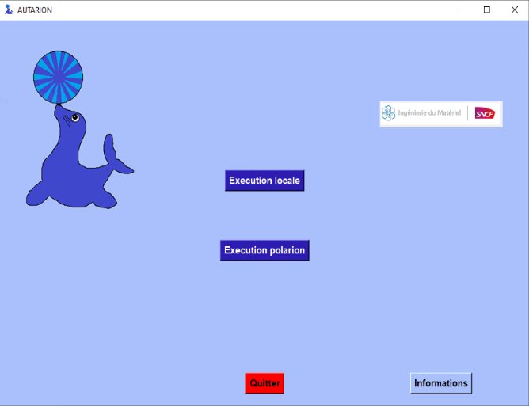
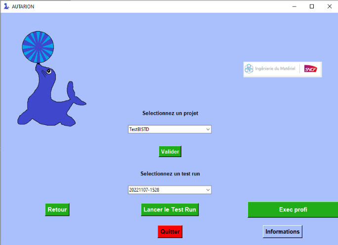
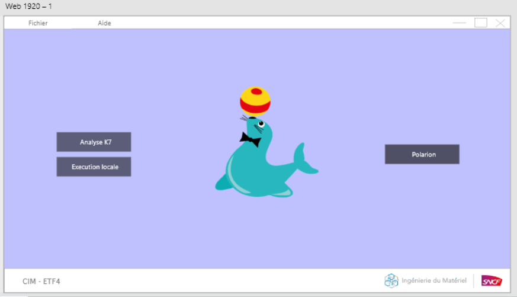
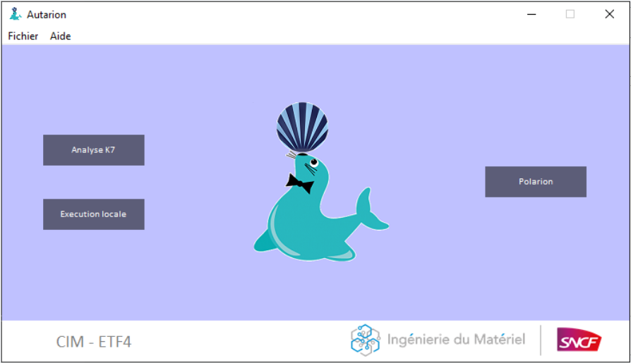
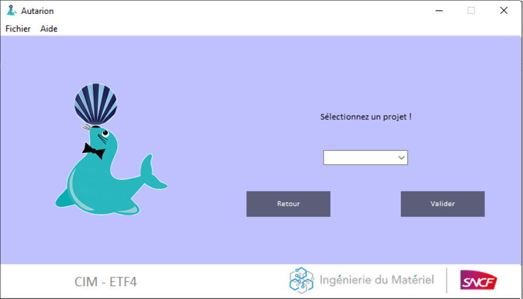

Ma première mission était donc de refaire l’interface graphique d’Autarion afin que celle-ci soit plus agréable et bien plus facile d’accès. Cette mission j’ai dû la réaliser seul, je l’ai faite via le logiciel Visual Studio code. Voici à quoi ressemblait initialement l’interface d’Autarion :


Pour y parvenir j’ai aussi beaucoup utilisé GIT pour pouvoir récupérer via des anciennes versions si un dysfonctionnement arrivait de plus, cela est très pratique car tout le monde peut créer sa branche du projet pour qu’on modifie chacun un quelque chose souhaité dans le programme tout en remettant tout en commun après. Ensuite on m’a donné une maquette de ce à quoi devait ressembler mon projet à la fin, sous forme d’image :

J’ai commencé par la créer dans un nouveau projet, de manière à voir comment j’allais m’y prendre, sans pour autant que mon programme de test soit fonctionnel.
Une fois réalisé j’ai combiné ça avec le programme de base ce qui a été très difficile car les deux programmes ne fonctionnaient pas pareils, l’un utilisait des coordonnées pour placer un élément sur la page et moi j’ai créé une grille (invisible) sur laquelle je plaçais tous mes éléments. De plus je devais donc réadapter toutes les fonctions renommer toutes les variables sans compter les soucis majeurs que j’ai pu avoir comme un souci que j’ai eu : Quand on veut déplacer une image on créer deux Canvas (zone de dessin) sur lequel on place l’image. Le premier apparait dès l’ouverture de la fenêtre, pour placer l’image, quand on appuie sur un bouton un autre Canvas est créé a un autre endroit pour accueillir le nouvel emplacement de l’image, en appuyant sur le bouton retour l’image change de Canvas mais le Canvas non utilisé cache tous les boutons en se mettant devant, j’ai commencé par utiliser une variable pour que lorsqu’on appelle la fonction on sache quel Canvas doit être utilisé avec une variable contenant soit 1 soit 0, en fonction de cela on vérifie avec if la variable et on explose l’autre Canvas qui gêne, seul soucis, au lancement de l’appli on cherche à exploser le deuxième Canvas mais il n’existe pas encore donc l’appli plante, alors à la fin du If on copie, colle toutes les lignes pour créer le Canvas et on les remet, cela fonctionnait que dans certains cas précis, alors j’ai trouvé qu’on pouvait faire monter de plan un bouton et je l’ai fait passer devant le Canvas pour que ceux-ci soient utilisables, on m’a demandé quelques modification, une fois faites voici le résultat final :


Le but était aussi que j’optimise le code cela était relativement long car je devais comprendre chaque ligne de code car la grande majorité n’étaient pas commentées, je devais donc effectuer des test moi-même pour savoir ce qui étais utile et en quoi ceci était utile, Je devais ensuite tout commenter afin de tout documenter directement dans le programme c’est aussi ce pour quoi je devais bien comprendre le programme dans les moindres détails, connaitre chaque ligne de code mêmes celles que je n’utilisais pas directement.